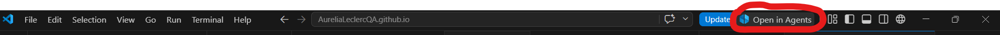
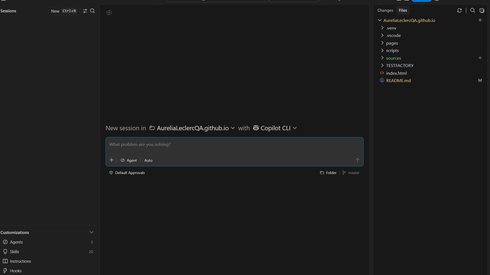
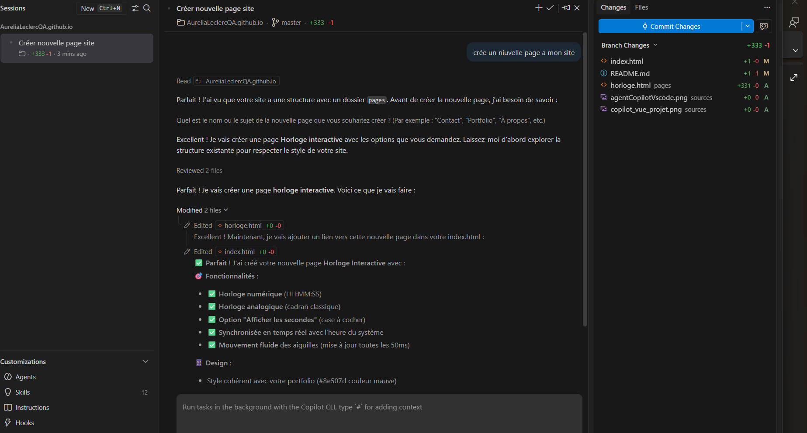
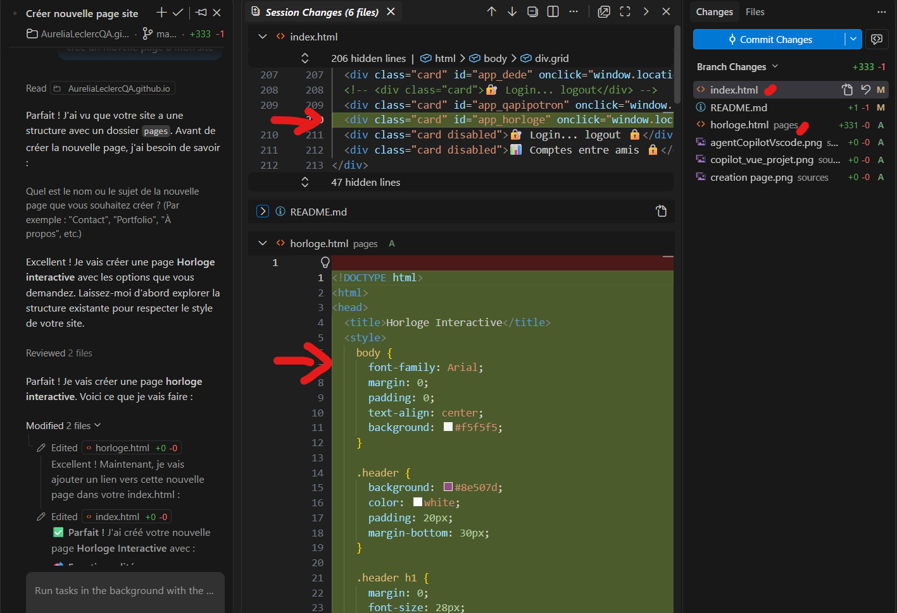
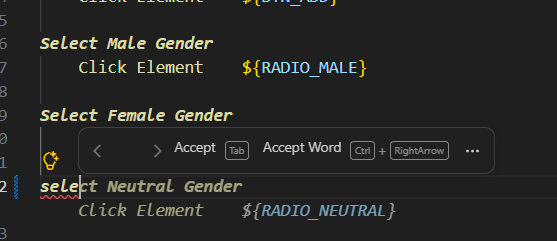
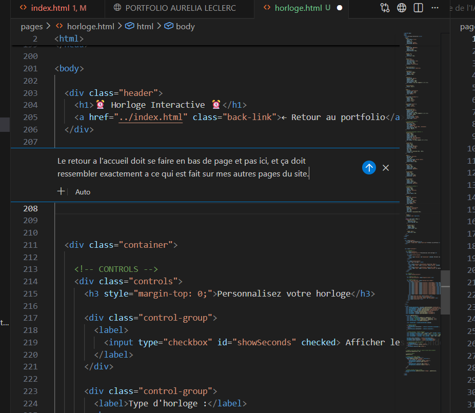
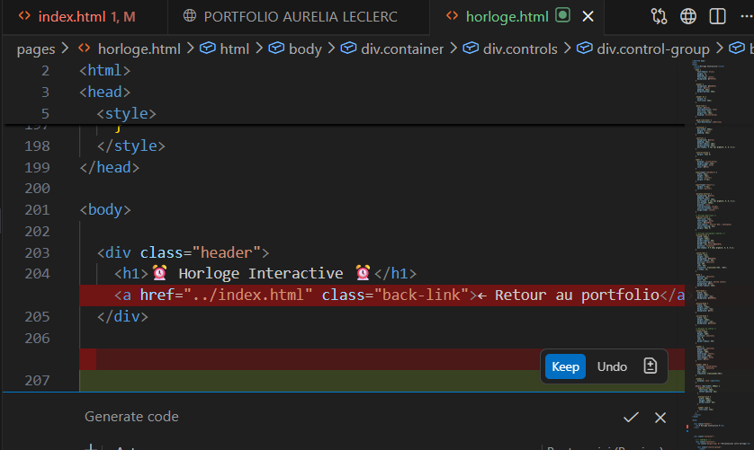

L’IA transforme progressivement les pratiques de test logiciel. Au-delà de l’automatisation classique, elle permet aujourd’hui de générer rapidement des maquettes interactives à partir de simples besoins exprimés en langage naturel.
👉 L'IA renforce aussi un rôle clé du testeur: celui de facilitateur du projet.
Contrairement à une idée reçue, le testeur n’intervient pas uniquement à la fin. Il:
👉 En réalité, écrire des tests, c’est déjà concevoir.
Avec un assistant IA, on peut par exemple générer une maquette HTML pour valider rapidement :
👉 Ici, le test commence avant le développement. Et fini les bonnes vieilles maquettes sur Paint!
Quand l'expression du besoin est exprimée de la façon suivante :
En tant qu'utilisateur, je veux pouvoir ajouter un élément à une liste via un encart.
On doit se projeter :
👉 Normalement, les critères d'acceptances sont là pour ça... Mais parfois il manques, et parfois… le texte seul ne suffit pas.
Le pouvoir de la maquette HTML, c'est qu'elle va encore plus loin : elle est interactive.
Besoin :
"En tant qu'utilisateur, je veux ajouter un élément à une liste via un encart."
Je peux demander à un IA: "j'ai le besoin si dessus, peut tu me générer un maquette HTML répondant a ce besoin?". On ajoute ensuite bien sur tous les détails qui nous parraissent nécéssaires sur le projet en respectant les règles de confidentialité, et on obtient une maquette interactive en quelques secondes comme celle présentée ci-dessous :
Et surtout : il peut proposer des améliorations avant même que le développement commence.
On peut aussi générer un schéma avec un prompt :
"UX/UI simple montrant un bouton 'Ajouter', un champ de saisie qui apparaît, et une liste d'éléments en dessous, style wireframe"
C'est utile aussi pour visualiser rapidement et glisser le schéma dans une conversation ou un commentaire de ticket… mais :
L'avantage de la maquette c'est qu'il suffit de changer quelques lignes de code, et pour ça, pas besoin de relancer une IA → gain de temps et de ressources, car n'oublions pas, l'IA à un coût énergétique non négligeable ! .
L’IA ne sert pas seulement à générer du code.
Elle permet aussi de :
Le testeur est donc aidé dans son rôle et devient un facilitateur clé entre le besoin et la solution.
🚧 En cours! 🚧
D'abord, il faut que VSCode soit à jour.







Je vois l'IA comme une grande source de motivation. Fini les heures a aller chercher sur stack overflow les réponses à nos questions. Au lieu de visiter des dizaines de pages, l'IA le fait a notre place et nous synthetise ce qu'elle trouve, et fourni des explications. Ainsi, il est possible d'apprendre avec une IA, puisque si on prend le temps de lire, elle nous donne des explications claires sur ce qu'elle fait. Par contre, je ne sais pas a quel point cela est clair pour quelqu'un qui n'a jamais fait de code ou de structuration de projet de test sans assistance. Moi je vois un avantage réel: en une apres midi je fais un travail qui aurait pu me prendre plusieurs jours, me faire arracher les cheveux, me décourager. L'IA aide aussi lorsque l'on est en manque d'inspirations. Mais posons nous la question: si des sites comme stack overflow ne sont plus alimentés, alors où l'IA ira-t-elle piocher ses solutions inoventes? Nous sommes là typiquement dans un probleme qu'est la conservation de la connaissance. À suivre...